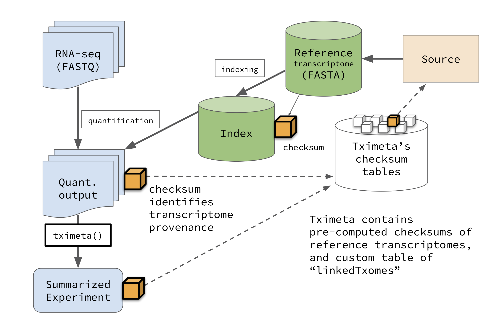
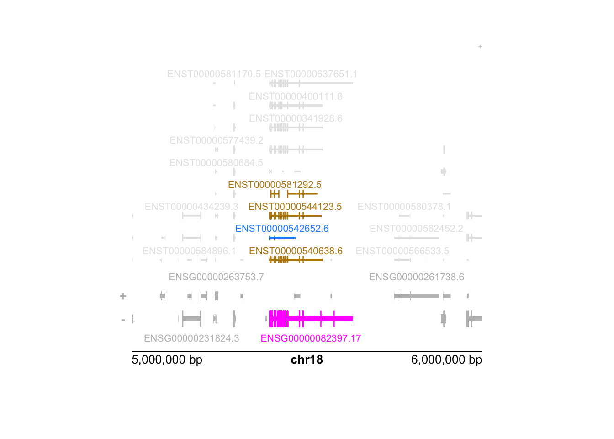

vignettes/tximeta.Rmd
tximeta.RmdAbstract
Tximeta performs numerous annotation and metadata gathering tasks on behalf of users during the import of transcript quantifications from Salmon, alevin, or piscem-infer into R/Bioconductor. Metadata and transcript ranges are added automatically, facilitating genomic analyses and assisting in computational reproducibility.
The tximeta package (Love et al.
2020) extends the tximport package (Soneson, Love, and Robinson 2015) for import of
transcript-level quantification data into R/Bioconductor. It
automatically adds annotation metadata when the RNA-seq data has been
quantified with Salmon (Patro et al.
2017) or piscem-infer,
or the scRNA-seq data quantified with alevin (Srivastava et al. 2019). To our knowledge,
tximeta is the only package for RNA-seq data import that
can automatically identify and attach transcriptome metadata based on
the unique sequence of the reference transcripts. For more details on
these packages – including the motivation for tximeta and
description of similar work – consult the References
below.
Note: tximeta requires that the
entire output of Salmon /
piscem-infer / alevin is present and unmodified in
order to identify the provenance of the reference transcripts. In
general, it’s a good idea to not modify or re-arrange the output
directory of bioinformatic software as other downstream software rely on
and assume a consistent directory structure. For sharing multiple
samples, one can use, for example, tar -czf to bundle up a
set of Salmon output directories, or to bundle one alevin output
directory. For tips on using tximeta with other quantifiers
see the other quantifiers section
below.

The first step using tximeta is to read in the sample
table, which will become the column data, colData,
of the final object, a SummarizedExperiment. The sample table
should contain all the information we need to identify the
Salmon quantification directories. For alevin
quantification, one should point to the quants_mat.gz file
that contains the counts for all of the cells (also, in order to
tximeta to work with alevin quantification, it
requires that alevin was run using gene IDs in the
tgMap step and not gene symbols).
Here we will use a Salmon quantification file in the
tximportData package to demonstrate the usage of
tximeta. We do not have a sample table, so we construct one
in R. It is recommended to keep a sample table as a CSV or TSV file
while working on an RNA-seq project with multiple samples.
dir <- system.file("extdata/salmon_dm", package="tximportData")
files <- file.path(dir, "SRR1197474", "quant.sf")
file.exists(files)## [1] TRUE
coldata <- data.frame(files, names="SRR1197474", condition="A", stringsAsFactors=FALSE)
coldata## files
## 1 /__w/_temp/Library/tximportData/extdata/salmon_dm/SRR1197474/quant.sf
## names condition
## 1 SRR1197474 Atximeta expects at least two columns in
coldata:
files - a pointer to the quant.sf
filesnames - the unique names that should be used to
identify samplesNormally, we would just run tximeta like so:
However, to avoid downloading remote GTF files during this vignette,
we will point to a GTF file saved locally (in the tximportData
package). We link the transcriptome of the Salmon index to its
locally saved GTF. The standard recommended usage of
tximeta would be the code chunk above, or to specify a
remote GTF source, not a local one. This following code is
therefore not recommended for a typically workflow, but is particular to
the vignette code.
indexDir <- file.path(dir, "Dm.BDGP6.22.98_salmon-0.14.1")
fastaFTP <- c("ftp://ftp.ensembl.org/pub/release-98/fasta/drosophila_melanogaster/cdna/Drosophila_melanogaster.BDGP6.22.cdna.all.fa.gz",
"ftp://ftp.ensembl.org/pub/release-98/fasta/drosophila_melanogaster/ncrna/Drosophila_melanogaster.BDGP6.22.ncrna.fa.gz")
gtfPath <- file.path(dir,"Drosophila_melanogaster.BDGP6.22.98.gtf.gz")
suppressPackageStartupMessages(library(tximeta))
makeLinkedTxome(indexDir=indexDir,
source="LocalEnsembl",
organism="Drosophila melanogaster",
release="98",
genome="BDGP6.22",
fasta=fastaFTP,
gtf=gtfPath,
write=FALSE)## saving linkedTxome in bfc (first time)
se <- tximeta(coldata)## importing quantifications## reading in files with read.delim (install 'readr' package for speed up)## 1
## found matching linked transcriptome:
## [ LocalEnsembl - Drosophila melanogaster - release 98 ]
## building TxDb with 'GenomicFeatures' package
## Import genomic features from the file as a GRanges object ... OK
## Prepare the 'metadata' data frame ... OK
## Make the TxDb object ... OK
## generating transcript ranges## Warning in checkAssays2Txps(assays, txps):
##
## Warning: the annotation is missing some transcripts that were quantified.
## 5 out of 33706 txps were missing from GTF/GFF but were in the indexed FASTA.
## (This occurs sometimes with Ensembl txps on haplotype chromosomes.)
## In order to build a ranged SummarizedExperiment, these txps were removed.
## To keep these txps, and to skip adding ranges, use skipMeta=TRUE
##
## Example missing txps: [FBtr0307759, FBtr0084079, FBtr0084080, ...]tximeta recognized the computed digest of the
transcriptome that the files were quantified against, it accessed the
GTF file of the transcriptome source, found and attached the transcript
ranges, and added the appropriate transcriptome and genome metadata. A
digest is a small string of alphanumeric characters that
uniquely identifies the collection of sequences that were used for
quantification (it is the application of a hash function). We sometimes
also call this value a “checksum” (in the tximeta paper).
A remote GTF is only downloaded once, and a local or remote GTF is
only parsed to build a TxDb or EnsDb once: if
tximeta recognizes that it has seen this Salmon
index before, it will use a cached version of the metadata and
transcript ranges.
Note the warning above that 5 of the transcripts are missing from the
GTF file and so are dropped from the final output. This is a problem
coming from the annotation source, and not easily avoided by
tximeta.
tximeta makes use of Bioconductor packages for storing
transcript databases as TxDb or EnsDb objects, which
both are connected by default to sqlite backends. For
GENCODE and RefSeq GTF files, tximeta uses the
GenomicFeatures package (Lawrence
2013) to parse the GTF and build a TxDb. For Ensembl GTF
files, tximeta will first attempt to obtain the correct
EnsDb object using AnnotationHub. The
ensembldb package (Rainer, Gatto, and
Weichenberger 2019) contains classes and methods for extracting
relevant data from Ensembl files. If the EnsDb has already been
made available on AnnotationHub, tximeta will download the
database directly, which saves the user time parsing the GTF into a
database (to avoid this, set useHub=FALSE). If the relevant
EnsDb is not available on AnnotationHub, tximeta
will build an EnsDb using ensembldb after downloading
the GTF file. Again, the download/construction of a transcript database
occurs only once, and upon subsequent usage of tximeta
functions, the cached version will be used.
We plan to support a wide variety of sources and organisms for transcriptomes with pre-computed digests, though for now the software focuses on predominantly human and mouse transcriptomes
The following digests are supported in this version of
tximeta:
| source | organism | releases |
|---|---|---|
| GENCODE | Homo sapiens | 23-45 |
| GENCODE | Mus musculus | M6-M34 |
| Ensembl | Homo sapiens | 76-111 |
| Ensembl | Mus musculus | 76-111 |
| Ensembl | Drosophila melanogaster | 79-111 |
| RefSeq | Homo sapiens | p1-p13 |
| RefSeq | Mus musculus | p2-p6 |
For Ensembl transcriptomes, we support the combined protein coding (cDNA) and non-coding (ncRNA) sequences, as well as the protein coding alone (although the former approach combining coding and non-coding transcripts is recommended for more accurate quantification).
tximeta also has functions to support linked
transcriptomes, where one or more sources for transcript sequences
have been combined or filtered. See the Linked
transcriptome section below for a demonstration. (The
makeLinkedTxome function was used above to avoid downloading
the GTF during the vignette building process.)
We have our coldata from before. Note that we’ve removed
files.
## DataFrame with 1 row and 2 columns
## names condition
## <character> <character>
## SRR1197474 SRR1197474 AHere we show the three matrices that were imported.
assayNames(se)## [1] "counts" "abundance" "length"If there were inferential replicates (Gibbs samples or bootstrap
samples), these would be imported as additional assays named
"infRep1", "infRep2", …
tximeta has imported the correct ranges for the
transcripts:
rowRanges(se)## GRanges object with 33701 ranges and 3 metadata columns:
## seqnames ranges strand | tx_id gene_id
## <Rle> <IRanges> <Rle> | <integer> <CharacterList>
## FBtr0070129 X 656673-657899 + | 28756 FBgn0025637
## FBtr0070126 X 656356-657899 + | 28752 FBgn0025637
## FBtr0070128 X 656673-657899 + | 28755 FBgn0025637
## FBtr0070124 X 656114-657899 + | 28750 FBgn0025637
## FBtr0070127 X 656356-657899 + | 28753 FBgn0025637
## ... ... ... ... . ... ...
## FBtr0114299 2R 21325218-21325323 + | 9300 FBgn0086023
## FBtr0113582 3R 5598638-5598777 - | 24474 FBgn0082989
## FBtr0091635 3L 1488906-1489045 + | 13780 FBgn0086670
## FBtr0113599 3L 261803-261953 - | 16973 FBgn0083014
## FBtr0113600 3L 831870-832008 - | 17070 FBgn0083057
## tx_name
## <character>
## FBtr0070129 FBtr0070129
## FBtr0070126 FBtr0070126
## FBtr0070128 FBtr0070128
## FBtr0070124 FBtr0070124
## FBtr0070127 FBtr0070127
## ... ...
## FBtr0114299 FBtr0114299
## FBtr0113582 FBtr0113582
## FBtr0091635 FBtr0091635
## FBtr0113599 FBtr0113599
## FBtr0113600 FBtr0113600
## -------
## seqinfo: 25 sequences from an unspecified genome; no seqlengthsWe have appropriate genome information, which prevents us from making bioinformatic mistakes:
seqinfo(se)## Seqinfo object with 25 sequences from an unspecified genome; no seqlengths:
## seqnames seqlengths isCircular genome
## 2L <NA> <NA> <NA>
## 2R <NA> <NA> <NA>
## 3L <NA> <NA> <NA>
## 3R <NA> <NA> <NA>
## 4 <NA> <NA> <NA>
## ... ... ... ...
## 211000022280481 <NA> <NA> <NA>
## 211000022280494 <NA> <NA> <NA>
## 211000022280703 <NA> <NA> <NA>
## mitochondrion_genome <NA> <NA> <NA>
## rDNA <NA> <NA> <NA>The se object has associated metadata that allows
tximeta to link to locally stored cached databases and
other Bioconductor objects. In further sections, we will show examples
functions that leverage this databases for adding exon information,
summarize transcript-level data to the gene level, or add identifiers.
However, first we mention that the user can easily access the cached
database with the following helper function. In this case,
tximeta has an associated EnsDb object that we can
retrieve and use in our R session:
edb <- retrieveDb(se)## loading existing TxDb created: 2024-02-21 14:31:38## Loading required package: GenomicFeatures## Loading required package: AnnotationDbi
class(edb)## [1] "TxDb"
## attr(,"package")
## [1] "GenomicFeatures"The database returned by retrieveDb is either a
TxDb in the case of GENCODE or RefSeq GTF annotation file, or
an EnsDb in the case of an Ensembl GTF annotation file. For
further use of these two database objects, consult the
GenomicFeatures vignettes and the ensembldb vignettes,
respectively (both Bioconductor packages).
Because the SummarizedExperiment maintains all the metadata of its creation, it also keeps a pointer to the necessary database for pulling out additional information, as demonstrated in the following sections.
If necessary, the tximeta package can pull down the remote
source to build a TxDb, but given that we’ve already built a TxDb once,
it simply loads the cached version. In order to remove the cached TxDb
and regenerate, one can remove the relevant entry from the
tximeta file cache that resides at the location given by
getTximetaBFC().
The se object created by tximeta, has the
start, end, and strand information for each transcript. Here, we swap
out the transcript GRanges for exons-by-transcript
GRangesList (it is a list of GRanges, where each
element of the list gives the exons for a particular transcript).
se.exons <- addExons(se)## loading existing TxDb created: 2024-02-21 14:31:38## generating exon ranges
rowRanges(se.exons)[[1]]## GRanges object with 2 ranges and 3 metadata columns:
## seqnames ranges strand | exon_id exon_name exon_rank
## <Rle> <IRanges> <Rle> | <integer> <character> <integer>
## [1] X 656673-656740 + | 72949 FBtr0070129-E1 1
## [2] X 657099-657899 + | 72952 FBtr0070129-E2 2
## -------
## seqinfo: 25 sequences from an unspecified genome; no seqlengthsAs with the transcript ranges, the exon ranges will be generated once
and cached locally. As it takes a non-negligible amount of time to
generate the exon-by-transcript GRangesList, this local caching
offers substantial time savings for repeated usage of
addExons with the same transcriptome.
We have implemented addExons to work only on the
transcript-level SummarizedExperiment object. We provide some
motivation for this choice in ?addExons. Briefly, if it is
desired to know the exons associated with a particular gene, we feel
that it makes more sense to pull out the relevant set of
exons-by-transcript for the transcripts for this gene, rather than
losing the hierarchical structure (exons to transcripts to genes) that
would occur with a GRangesList of exons grouped per gene.
Likewise, the tximeta package can make use of the cached
TxDb database for the purpose of summarizing transcript-level
quantifications and bias corrections to the gene-level. After
summarization, the rowRanges reflect the start and end
position of the gene, which in Bioconductor are defined by the leftmost
and rightmost genomic coordinates of all the transcripts. As with the
transcript and exons, the gene ranges are cached locally for repeated
usage. The transcript IDs are stored as a CharacterList column
tx_ids.
gse <- summarizeToGene(se)## loading existing TxDb created: 2024-02-21 14:31:38## obtaining transcript-to-gene mapping from database## generating gene ranges## gene ranges assigned by total range of isoforms, see `assignRanges`## summarizing abundance## summarizing counts## summarizing length
rowRanges(gse)## GRanges object with 17208 ranges and 2 metadata columns:
## seqnames ranges strand | gene_id
## <Rle> <IRanges> <Rle> | <character>
## FBgn0000003 3R 6822498-6822796 + | FBgn0000003
## FBgn0000008 2R 22136968-22172834 + | FBgn0000008
## FBgn0000014 3R 16807214-16830049 - | FBgn0000014
## FBgn0000015 3R 16927212-16972236 - | FBgn0000015
## FBgn0000017 3L 16615866-16647882 - | FBgn0000017
## ... ... ... ... . ...
## FBgn0286199 3R 24279572-24281576 + | FBgn0286199
## FBgn0286203 2R 5413744-5456095 + | FBgn0286203
## FBgn0286204 3R 8950246-8963037 - | FBgn0286204
## FBgn0286213 3L 13023352-13024762 + | FBgn0286213
## FBgn0286222 X 6678424-6681845 + | FBgn0286222
## tx_ids
## <CharacterList>
## FBgn0000003 FBtr0081624
## FBgn0000008 FBtr0071763,FBtr0100521,FBtr0342981,...
## FBgn0000014 FBtr0306337,FBtr0083388,FBtr0083387,...
## FBgn0000015 FBtr0415463,FBtr0415464,FBtr0083385,...
## FBgn0000017 FBtr0112790,FBtr0345369,FBtr0075357,...
## ... ...
## FBgn0286199 FBtr0084600
## FBgn0286203 FBtr0299918,FBtr0299920,FBtr0299921,...
## FBgn0286204 FBtr0082014,FBtr0334329
## FBgn0286213 FBtr0075878
## FBgn0286222 FBtr0070953,FBtr0070954
## -------
## seqinfo: 25 sequences from an unspecified genome; no seqlengthsWe also offer a new type of range assignment, based on the most
abundant isoform rather than the leftmost to rightmost coordinate. See
the assignRanges argument of ?summarizeToGene.
Using the most abundant isoform arguably will reflect more accurate
genomic distances than the default option.
# unevaluated code chunk
gse <- summarizeToGene(se, assignRanges="abundant")For more explanation about why this may be a better choice, see the following tutorial chapter:
https://tidyomics.github.io/tidy-ranges-tutorial/gene-ranges-in-tximeta.html
In the below diagram, the pink feature is the set of all exons belonging to any isoform of the gene, such that the TSS is on the right side of this minus strand feature. However, the blue feature is the most abundant isoform (the brown features are the next most abundant isoforms). The pink feature is therefore not a good representation for the locus.

We would like to add support to easily map transcript or gene identifiers from one annotation to another. This is just a prototype function, but we show how we can easily add alternate IDs given that we know the organism and the source of the transcriptome. (This function currently only works for GENCODE and Ensembl gene or transcript IDs but could be extended to work for arbitrary sources.)
library(org.Dm.eg.db)##
gse <- addIds(gse, "REFSEQ", gene=TRUE)## mapping to new IDs using org.Dm.eg.db
## if all matching IDs are desired, and '1:many mappings' are reported,
## set multiVals='list' to obtain all the matching IDs## 'select()' returned 1:many mapping between keys and columns
mcols(gse)## DataFrame with 17208 rows and 3 columns
## gene_id tx_ids REFSEQ
## <character> <CharacterList> <character>
## FBgn0000003 FBgn0000003 FBtr0081624 NR_001992
## FBgn0000008 FBgn0000008 FBtr0071763,FBtr0100521,FBtr0342981,... NM_001014543
## FBgn0000014 FBgn0000014 FBtr0306337,FBtr0083388,FBtr0083387,... NM_001170161
## FBgn0000015 FBgn0000015 FBtr0415463,FBtr0415464,FBtr0083385,... NM_001275719
## FBgn0000017 FBgn0000017 FBtr0112790,FBtr0345369,FBtr0075357,... NM_001104153
## ... ... ... ...
## FBgn0286199 FBgn0286199 FBtr0084600 NM_142982
## FBgn0286203 FBgn0286203 FBtr0299918,FBtr0299920,FBtr0299921,... NM_001144134
## FBgn0286204 FBgn0286204 FBtr0082014,FBtr0334329 NM_001275464
## FBgn0286213 FBgn0286213 FBtr0075878 NM_168534
## FBgn0286222 FBgn0286222 FBtr0070953,FBtr0070954 NM_132111The following code chunk demonstrates how to build a DESeqDataSet and begin a differential expression analysis.
suppressPackageStartupMessages(library(DESeq2))
# here there is a single sample so we use ~1.
# expect a warning that there is only a single sample...
suppressWarnings({dds <- DESeqDataSet(gse, ~1)})## using counts and average transcript lengths from tximeta
# ... see DESeq2 vignetteThe Swish method in the fishpond package directly
works with the SummarizedExperiment output from
tximeta, and can perform differential analysis on transcript
expression taking into account inferential replicates, e.g. bootstrap or
Gibbs samples, which are imported and arranged by tximeta
if these were generated during quantification.
library(fishpond)
y <- se
# y <- scaleInfReps(y)
# y <- labelKeep(y)
# y <- swish(y, x="condition")
# ... see Swish vignette in fishpond packageWe have a convenient wrapper function that will build a DGEList object for use with edgeR.
suppressPackageStartupMessages(library(edgeR))
y <- makeDGEList(gse)
# ... see edgeR User's Guide for further stepsThe following code chunk demonstrates the code inside of the above wrapper function, and produces the same output.
cts <- assays(gse)[["counts"]]
normMat <- assays(gse)[["length"]]
normMat <- normMat / exp(rowMeans(log(normMat)))
o <- log(calcNormFactors(cts/normMat)) + log(colSums(cts/normMat))
y <- DGEList(cts)
y <- scaleOffset(y, t(t(log(normMat)) + o))
# ... see edgeR User's Guide for further stepsThe following code chunk demonstrates how one could use the
Swish method in the fishpond Bioconductor package. Here we use
the transcript-level object se. This dataset only has a
single sample and no inferential replicates, but the analysis would
begin with such code. See the Swish vignette in the fishpond package for
a complete example:
y <- se # rename the object to 'y'
library(fishpond)
# if inferential replicates existed in the data,
# analysis would begin with:
#
# y <- scaleInfReps(y)
# ... see Swish vignette in the fishpond packageFor limma with voom transformation we recommend, as in the tximport vignette to generate counts-from-abundance instead of providing an offset for average transcript length.
gse <- summarizeToGene(se, countsFromAbundance="lengthScaledTPM")## loading existing TxDb created: 2024-02-21 14:31:38## obtaining transcript-to-gene mapping from database## loading existing gene ranges created: 2024-02-21 14:31:42## gene ranges assigned by total range of isoforms, see `assignRanges`## summarizing abundance## summarizing counts## summarizing lengthAbove we generated counts-from-abundance when calling
summarizeToGene. The counts-from-abundance status is then
stored in the metadata:
metadata(gse)$countsFromAbundance ## [1] "lengthScaledTPM"The following information is attached to the
SummarizedExperiment by tximeta:
## [1] "tximetaInfo" "quantInfo" "countsFromAbundance"
## [4] "level" "txomeInfo" "txdbInfo"## List of 31
## $ salmon_version : chr "0.14.1"
## $ samp_type : chr "none"
## $ opt_type : chr "vb"
## $ quant_errors :List of 1
## ..$ : list()
## $ num_libraries : int 1
## $ library_types : chr "ISR"
## $ frag_dist_length : int 1001
## $ seq_bias_correct : logi FALSE
## $ gc_bias_correct : logi TRUE
## $ num_bias_bins : int 4096
## $ mapping_type : chr "mapping"
## $ num_valid_targets : int 33706
## $ num_decoy_targets : int 0
## $ num_eq_classes : int 70718
## $ serialized_eq_classes : logi FALSE
## $ length_classes : int [1:5, 1] 867 1533 2379 3854 71382
## $ index_seq_hash : chr "7ba5e9597796ea86cf11ccf6635ca88fbc37c2848d38083c23986aa2c6a21eae"
## $ index_name_hash : chr "b6426061057bba9b7afb4dc76fa68238414cf35b4190c95ca6fc44280d4ca87c"
## $ index_seq_hash512 : chr "05f111abcda1efd2e489ace6324128cdaaa311712a28ed716d957fdfd8706ec41ca9177ebf12f54e99c2a89582d06f31c5e09dc1dce2d13"| __truncated__
## $ index_name_hash512 : chr "ccdf58f23e48c8c53cd122b5f5990b5adce9fec87ddf8bd88153afbe93296d87b818fba89d12dbc20c882f7d98353840394c5040fea7432"| __truncated__
## $ num_bootstraps : int 0
## $ num_processed : int 42422337
## $ num_mapped : int 34098209
## $ num_decoy_fragments : int 0
## $ num_dovetail_fragments : int 2048810
## $ num_fragments_filtered_vm : int 989383
## $ num_alignments_below_threshold_for_mapped_fragments_vm: int 267540
## $ percent_mapped : num 80.4
## $ call : chr "quant"
## $ start_time : chr "Sat Oct 12 13:55:01 2019"
## $ end_time : chr "Sat Oct 12 14:08:11 2019"## List of 9
## $ index : chr "Dm.BDGP6.22.98_salmon-0.14.1"
## $ source : chr "LocalEnsembl"
## $ organism : chr "Drosophila melanogaster"
## $ release : chr "98"
## $ genome : chr "BDGP6.22"
## $ fasta :List of 1
## ..$ : chr [1:2] "ftp://ftp.ensembl.org/pub/release-98/fasta/drosophila_melanogaster/cdna/Drosophila_melanogaster.BDGP6.22.cdna.all.fa.gz" "ftp://ftp.ensembl.org/pub/release-98/fasta/drosophila_melanogaster/ncrna/Drosophila_melanogaster.BDGP6.22.ncrna.fa.gz"
## $ gtf : chr "/__w/_temp/Library/tximportData/extdata/salmon_dm/Drosophila_melanogaster.BDGP6.22.98.gtf.gz"
## $ sha256 : chr "7ba5e9597796ea86cf11ccf6635ca88fbc37c2848d38083c23986aa2c6a21eae"
## $ linkedTxome: logi TRUE## List of 3
## $ version :Classes 'package_version', 'numeric_version' hidden list of 1
## ..$ : int [1:3] 1 21 4
## $ type : chr "salmon"
## $ importTime: POSIXct[1:1], format: "2024-02-21 14:31:29"## Named chr [1:13] "TxDb" "GenomicFeatures" ...
## - attr(*, "names")= chr [1:13] "Db type" "Supporting package" "Data source" "Organism" ...tximeta makes use of BiocFileCache to store
transcript and other databases, so saving the relevant databases in a
centralized location used by other Bioconductor packages as well. It is
possible that an error can occur in connecting to these databases,
either if the files were accidentally removed from the file system, or
if there was an error generating or writing the database to the cache
location. In each of these cases, it is easy to remove the entry in the
BiocFileCache so that tximeta will know to
regenerate the transcript database or any other missing database.
If you have used the default cache location, then you can obtain access to your BiocFileCache with:
library(BiocFileCache)## Loading required package: dbplyr
bfc <- BiocFileCache()Otherwise, you can recall your particular tximeta cache
location with getTximetaBFC().
You can then inspect the entries in your BiocFileCache using
bfcinfo and remove the entry associated with the missing
database with bfcremove. See the BiocFileCache vignette for
more details on finding and removing entries from a BiocFileCache.
Note that there may be many entries in the BiocFileCache location,
including .sqlite database files and serialized
.rds files. You should only remove the entry associated
with the missing database, e.g. if R gave an error when trying to
connect to the TxDb associated with GENCODE v99 human transcripts, you
should look for the rid of the entry associated with the
human v99 GTF from GENCODE.
tximeta automatically imports relevant metadata when the
transcriptome matches a known source – known in the sense that
it is in the set of pre-computed hashed digests in tximeta
(GENCODE, Ensembl, and RefSeq for human and mouse). tximeta
also facilitates the linking of transcriptomes used in building the
Salmon index with relevant public sources, in the case that
these are not part of this pre-computed set known to
tximeta. The linking of the transcriptome source with the
quantification files is important in the case that the transcript
sequence no longer matches a known source (uniquely combined or filtered
FASTA files), or if the source is not known to tximeta.
Combinations of coding and non-coding human, mouse, and fruit fly
Ensembl transcripts should be automatically recognized by
tximeta and does not require making a linkedTxome.
As the package is further developed, we plan to roll out support for all
common transcriptomes, from all sources.
Note: if you are using Salmon in alignment mode,
then there is no Salmon index, and without the Salmon index, there is no
digest. We don’t have a perfect solution for this yet, but you can still
summarize transcript counts to gene with a tx2gene table
that you construct manually (see tximport vignette for
example code). Just specify the arguments,
skipMeta=TRUE, txOut=FALSE, tx2gene=tx2gene, when calling
tximeta and it will perform summarization to gene level as
in tximport.
We now demonstrate how to make a linkedTxome and how to share and load a linkedTxome. We point to a Salmon quantification file which was quantified against a transcriptome that included the coding and non-coding Drosophila melanogaster transcripts, as well as an artificial transcript of 960 bp (for demonstration purposes only).
file <- file.path(dir, "SRR1197474.plus", "quant.sf")
file.exists(file)## [1] TRUE
coldata <- data.frame(files=file, names="SRR1197474", sample="1",
stringsAsFactors=FALSE)Trying to import the files gives a message that tximeta
couldn’t find a matching transcriptome, so it returns an non-ranged
SummarizedExperiment.
se <- tximeta(coldata)## importing quantifications## reading in files with read.delim (install 'readr' package for speed up)## 1
## couldn't find matching transcriptome, returning non-ranged SummarizedExperimentIf the transcriptome used to generate the Salmon index does not match any transcriptomes from known sources (e.g. from combining or filtering known transcriptome files), there is not much that can be done to automatically populate the metadata during quantification import. However, we can facilitate the following two cases:
tximeta offers functionality to assist reproducible
analysis in both of these cases.
To make this quantification reproducible, we make a
linkedTxome which records key information about the sources
of the transcript FASTA files, and the location of the relevant GTF
file. It also records the digest of the transcriptome that was computed
by Salmon during the index step.
Source: when creating the linkedTxome
one must specify the source of the transcriptome. See
?linkedTxome for a note on the implications of this text
string. For canonical GENCODE or Ensembl transcriptomes, one can use
"GENCODE" or "Ensembl", but for modified or
otherwise any transcriptomes defined by a local database, it is
recommended to use a different string, "LocalGENCODE" or
`“LocalEnsembl”, which will avoid tximeta pulling canonical
GENCODE or Ensembl resources from AnnotationHub.
Multiple GTF/GFF files: linkedTxome and
tximeta do not currently support multiple GTF/GFF files,
which is a more complicated case than multiple FASTA, which is
supported. Currently, we recommend that users should add or combine
GTF/GFF files themselves to create a single GTF/GFF file that contains
all features used in quantification, and then upload such a file to
Zenodo, which can then be linked as shown below. Feel free to
contact the developers on the Bioconductor support site or GitHub Issue
page for further details or feature requests.
Stringtie: A special note for building on top of
Stringtie-generated transcripts: it is a good idea to change gene
identifiers, to not include a period ., as the
period will later be used to separate transcript versions from gene
identifiers. This can be done before building the Salmon index, by
changing periods in the gene identifier to an underscore. See this GitHub
issue for details.
By default, linkedTxome will write out a JSON file which
can be shared with others, linking the digest of the index with the
other metadata, including FASTA and GTF sources. By default, it will
write out to a file with the same name as the indexDir, but
with a .json extension added. This can be prevented with
write=FALSE, and the file location can be changed with
jsonFile.
First we specify the path where the Salmon index is located.
Typically you would not use system.file and
file.path to locate this directory, but simply define
indexDir to be the path of the Salmon directory on
your machine. Here we use system.file and
file.path because we have included parts of a
Salmon index directory in the tximeta package itself
for demonstration of functionality in this vignette.
indexDir <- file.path(dir, "Dm.BDGP6.22.98.plus_salmon-0.14.1")Now we provide the location of the FASTA files and the GTF file for this transcriptome.
Note: the basename for the GTF file is used as a
unique identifier for the cached versions of the TxDb and the
transcript ranges, which are stored on the user’s behalf via
BiocFileCache. This is not an issue, as GENCODE, Ensembl, and
RefSeq all provide GTF files which are uniquely identified by their
filename,
e.g. Drosophila_melanogaster.BDGP6.22.98.gtf.gz.
The recommended usage of tximeta would be to specify a
remote GTF source, as seen in the commented-out line below:
fastaFTP <- c("ftp://ftp.ensembl.org/pub/release-98/fasta/drosophila_melanogaster/cdna/Drosophila_melanogaster.BDGP6.22.cdna.all.fa.gz",
"ftp://ftp.ensembl.org/pub/release-98/fasta/drosophila_melanogaster/ncrna/Drosophila_melanogaster.BDGP6.22.ncrna.fa.gz",
"extra_transcript.fa.gz")
#gtfFTP <- "ftp://path/to/custom/Drosophila_melanogaster.BDGP6.22.98.plus.gtf.gz"Instead of the above commented-out FTP location for the GTF file, we
specify a location within an R package. This step is just to avoid
downloading from a remote FTP during vignette building. This use of
file.path to point to a file in an R package is specific to
this vignette and should not be used in a typical workflow. The
following GTF file is a modified version of the release 98 from Ensembl,
which includes description of a one transcript, one exon artificial gene
which was inserted into the transcriptome (for demonstration purposes
only).
gtfPath <- file.path(dir,"Drosophila_melanogaster.BDGP6.22.98.plus.gtf.gz")Finally, we create a linkedTxome. In this vignette, we point
to a temporary directory for the JSON file, but a more typical workflow
would write the JSON file to the same location as the Salmon
index by not specifying jsonFile.
makeLinkedTxome performs two operation: (1) it creates a
new entry in an internal table that links the transcriptome used in the
Salmon index to its sources, and (2) it creates a JSON file
such that this linkedTxome can be shared.
tmp <- tempdir()
jsonFile <- file.path(tmp, paste0(basename(indexDir), ".json"))
makeLinkedTxome(indexDir=indexDir,
source="LocalEnsembl", organism="Drosophila melanogaster",
release="98", genome="BDGP6.22",
fasta=fastaFTP, gtf=gtfPath,
jsonFile=jsonFile)## writing linkedTxome to /tmp/Rtmph0AffD/Dm.BDGP6.22.98.plus_salmon-0.14.1.json## saving linkedTxome in bfcAfter running makeLinkedTxome, the connection between
this Salmon index (and its digest) with the sources is saved
for persistent usage. Note that because we added a single transcript of
960bp to the FASTA file used for quantification, tximeta
could tell that this was not quantified against release 98 of the
Ensembl transcripts for Drosophila melanogaster. Only when the
correct set of transcripts were specified does tximeta
recognize and import the correct metadata.
With use of tximeta and a linkedTxome, the
software figures out if the remote GTF has been accessed and compiled
into a TxDb before, and on future calls, it will simply load
the pre-computed metadata and transcript ranges.
Note the warning that 5 of the transcripts are missing from the GTF
file and so are dropped from the final output. This is a problem coming
from the annotation source, and not easily avoided by
tximeta.
se <- tximeta(coldata)## importing quantifications## reading in files with read.delim (install 'readr' package for speed up)## 1
## found matching linked transcriptome:
## [ LocalEnsembl - Drosophila melanogaster - release 98 ]
## building TxDb with 'GenomicFeatures' package
## Import genomic features from the file as a GRanges object ... OK
## Prepare the 'metadata' data frame ... OK
## Make the TxDb object ... OK
## generating transcript ranges## Warning in checkAssays2Txps(assays, txps):
##
## Warning: the annotation is missing some transcripts that were quantified.
## 5 out of 33707 txps were missing from GTF/GFF but were in the indexed FASTA.
## (This occurs sometimes with Ensembl txps on haplotype chromosomes.)
## In order to build a ranged SummarizedExperiment, these txps were removed.
## To keep these txps, and to skip adding ranges, use skipMeta=TRUE
##
## Example missing txps: [FBtr0307759, FBtr0084079, FBtr0084080, ...]We can see that the appropriate metadata and transcript ranges are attached.
rowRanges(se)## GRanges object with 33702 ranges and 3 metadata columns:
## seqnames ranges strand | tx_id gene_id
## <Rle> <IRanges> <Rle> | <integer> <CharacterList>
## Newgene 3R 1-960 + | 20219 Newgene
## FBtr0070129 X 656673-657899 + | 28757 FBgn0025637
## FBtr0070126 X 656356-657899 + | 28753 FBgn0025637
## FBtr0070128 X 656673-657899 + | 28756 FBgn0025637
## FBtr0070124 X 656114-657899 + | 28751 FBgn0025637
## ... ... ... ... . ... ...
## FBtr0114299 2R 21325218-21325323 + | 9300 FBgn0086023
## FBtr0113582 3R 5598638-5598777 - | 24475 FBgn0082989
## FBtr0091635 3L 1488906-1489045 + | 13780 FBgn0086670
## FBtr0113599 3L 261803-261953 - | 16973 FBgn0083014
## FBtr0113600 3L 831870-832008 - | 17070 FBgn0083057
## tx_name
## <character>
## Newgene Newgene
## FBtr0070129 FBtr0070129
## FBtr0070126 FBtr0070126
## FBtr0070128 FBtr0070128
## FBtr0070124 FBtr0070124
## ... ...
## FBtr0114299 FBtr0114299
## FBtr0113582 FBtr0113582
## FBtr0091635 FBtr0091635
## FBtr0113599 FBtr0113599
## FBtr0113600 FBtr0113600
## -------
## seqinfo: 25 sequences from an unspecified genome; no seqlengths
seqinfo(se)## Seqinfo object with 25 sequences from an unspecified genome; no seqlengths:
## seqnames seqlengths isCircular genome
## 2L <NA> <NA> <NA>
## 2R <NA> <NA> <NA>
## 3L <NA> <NA> <NA>
## 3R <NA> <NA> <NA>
## 4 <NA> <NA> <NA>
## ... ... ... ...
## 211000022280481 <NA> <NA> <NA>
## 211000022280494 <NA> <NA> <NA>
## 211000022280703 <NA> <NA> <NA>
## mitochondrion_genome <NA> <NA> <NA>
## rDNA <NA> <NA> <NA>The following code removes the entire table with information about the linkedTxomes. This is just for demonstration, so that we can show how to load a JSON file below.
Note: Running this code will clear any information about linkedTxomes. Don’t run this unless you really want to clear this table!
library(BiocFileCache)
if (interactive()) {
bfcloc <- getTximetaBFC()
} else {
bfcloc <- tempdir()
}
bfc <- BiocFileCache(bfcloc)
bfcinfo(bfc)## # A tibble: 7 × 10
## rid rname create_time access_time rpath rtype fpath last_modified_time etag
## <chr> <chr> <chr> <chr> <chr> <chr> <chr> <dbl> <chr>
## 1 BFC1 link… 2024-02-21… 2024-02-21… /tmp… rela… 1255… NA NA
## 2 BFC2 Dros… 2024-02-21… 2024-02-21… /tmp… rela… 1255… NA NA
## 3 BFC3 txpR… 2024-02-21… 2024-02-21… /tmp… rela… 1255… NA NA
## 4 BFC4 exon… 2024-02-21… 2024-02-21… /tmp… rela… 1255… NA NA
## 5 BFC5 gene… 2024-02-21… 2024-02-21… /tmp… rela… 1255… NA NA
## 6 BFC6 Dros… 2024-02-21… 2024-02-21… /tmp… rela… 1255… NA NA
## 7 BFC7 txpR… 2024-02-21… 2024-02-21… /tmp… rela… 1255… NA NA
## # ℹ 1 more variable: expires <dbl>## # A tibble: 6 × 10
## rid rname create_time access_time rpath rtype fpath last_modified_time etag
## <chr> <chr> <chr> <chr> <chr> <chr> <chr> <dbl> <chr>
## 1 BFC2 Dros… 2024-02-21… 2024-02-21… /tmp… rela… 1255… NA NA
## 2 BFC3 txpR… 2024-02-21… 2024-02-21… /tmp… rela… 1255… NA NA
## 3 BFC4 exon… 2024-02-21… 2024-02-21… /tmp… rela… 1255… NA NA
## 4 BFC5 gene… 2024-02-21… 2024-02-21… /tmp… rela… 1255… NA NA
## 5 BFC6 Dros… 2024-02-21… 2024-02-21… /tmp… rela… 1255… NA NA
## 6 BFC7 txpR… 2024-02-21… 2024-02-21… /tmp… rela… 1255… NA NA
## # ℹ 1 more variable: expires <dbl>If a collaborator or the Suppmentary Files for a publication shares a
linkedTxome JSON file, we can likewise use
tximeta to automatically assemble the relevant metadata and
transcript ranges. This implies that the other person has used
tximeta with the function makeLinkedTxome
demonstrated above, pointing to their Salmon index and to the
FASTA and GTF source(s).
We point to the JSON file and use loadLinkedTxome and
then the relevant metadata is saved for persistent usage. In this case,
we saved the JSON file in a temporary directory.
jsonFile <- file.path(tmp, paste0(basename(indexDir), ".json"))
loadLinkedTxome(jsonFile)## saving linkedTxome in bfc (first time)Again, using tximeta figures out whether it needs to
access the remote GTF or not, and assembles the appropriate object on
the user’s behalf.
se <- tximeta(coldata)## importing quantifications## reading in files with read.delim (install 'readr' package for speed up)## 1
## found matching linked transcriptome:
## [ LocalEnsembl - Drosophila melanogaster - release 98 ]
## loading existing TxDb created: 2024-02-21 14:31:53
## loading existing transcript ranges created: 2024-02-21 14:31:54## Warning in checkAssays2Txps(assays, txps):
##
## Warning: the annotation is missing some transcripts that were quantified.
## 5 out of 33707 txps were missing from GTF/GFF but were in the indexed FASTA.
## (This occurs sometimes with Ensembl txps on haplotype chromosomes.)
## In order to build a ranged SummarizedExperiment, these txps were removed.
## To keep these txps, and to skip adding ranges, use skipMeta=TRUE
##
## Example missing txps: [FBtr0307759, FBtr0084079, FBtr0084080, ...]Finally, we clear the linkedTxomes table again so that the above examples will work. This is just for the vignette code and not part of a typical workflow.
Note: Running this code will clear any information about linkedTxomes. Don’t run this unless you really want to clear this table!
if (interactive()) {
bfcloc <- getTximetaBFC()
} else {
bfcloc <- tempdir()
}
bfc <- BiocFileCache(bfcloc)
bfcinfo(bfc)## # A tibble: 7 × 10
## rid rname create_time access_time rpath rtype fpath last_modified_time etag
## <chr> <chr> <chr> <chr> <chr> <chr> <chr> <dbl> <chr>
## 1 BFC2 Dros… 2024-02-21… 2024-02-21… /tmp… rela… 1255… NA NA
## 2 BFC3 txpR… 2024-02-21… 2024-02-21… /tmp… rela… 1255… NA NA
## 3 BFC4 exon… 2024-02-21… 2024-02-21… /tmp… rela… 1255… NA NA
## 4 BFC5 gene… 2024-02-21… 2024-02-21… /tmp… rela… 1255… NA NA
## 5 BFC6 Dros… 2024-02-21… 2024-02-21… /tmp… rela… 1255… NA NA
## 6 BFC7 txpR… 2024-02-21… 2024-02-21… /tmp… rela… 1255… NA NA
## 7 BFC8 link… 2024-02-21… 2024-02-21… /tmp… rela… 1255… NA NA
## # ℹ 1 more variable: expires <dbl>## # A tibble: 6 × 10
## rid rname create_time access_time rpath rtype fpath last_modified_time etag
## <chr> <chr> <chr> <chr> <chr> <chr> <chr> <dbl> <chr>
## 1 BFC2 Dros… 2024-02-21… 2024-02-21… /tmp… rela… 1255… NA NA
## 2 BFC3 txpR… 2024-02-21… 2024-02-21… /tmp… rela… 1255… NA NA
## 3 BFC4 exon… 2024-02-21… 2024-02-21… /tmp… rela… 1255… NA NA
## 4 BFC5 gene… 2024-02-21… 2024-02-21… /tmp… rela… 1255… NA NA
## 5 BFC6 Dros… 2024-02-21… 2024-02-21… /tmp… rela… 1255… NA NA
## 6 BFC7 txpR… 2024-02-21… 2024-02-21… /tmp… rela… 1255… NA NA
## # ℹ 1 more variable: expires <dbl>tximeta can import the output from any quantifiers that
are supported by tximport, and if these are not
Salmon, alevin, or Sailfish output, it will
simply return a non-ranged SummarizedExperiment by default.
An alternative solution is to wrap other quantifiers in workflows
that include metadata information JSON files along with each
quantification file. One can place these files in
aux_info/meta_info.json or any relative location specified
by customMetaInfo, for example
customMetaInfo="meta_info.json". This JSON file is located
relative to the quantification file and should contain a tag
index_seq_hash with an associated value of the SHA-256 hash
of the reference transcripts. For computing the hash value of the
reference transcripts, see the FastaDigest python
package. The hash value used by Salmon is the SHA-256 hash
value of the reference sequences stripped of the header lines, and
concatenated together with the empty string (so only cDNA sequences
combined without any new line characters). FastaDigest can be
installed with pip install fasta_digest.
This vignette described the use of tximeta to import
quantification data into R/Bioconductor with automatic detection and
addition of metadata. The SummarizedExperiment produced by
tximeta can then be provided to downstream statistical
analysis packages as described above. The tximeta package does
not contain any functionality for automated differential analysis.
The ARMOR workflow
does automate a variety of differential analyses, and make use of
tximeta for creation of a SummarizedExperiment
with attached annotation metadata. ARMOR stands for ``An Automated
Reproducible MOdular Workflow for Preprocessing and Differential
Analysis of RNA-seq Data’’ and is described in more detail in the
article by Orjuela et al. (2019).
tximeta makes use of the default BiocFileCache location, unless otherwise specified by the user. As of BiocFileCache version > 1.15.1, the default caching location used by BiocFileCache has changed. In order to continue to use the same cache (without re-downloading files), please follow the steps in the BiocFileCache vignette, under the heading Default Caching Location Update.
The development of tximeta has benefited from suggestions from these and other individuals in the community:
## Loading required package: usethis## ─ Session info ───────────────────────────────────────────────────────────────
## setting value
## version R version 4.3.2 (2023-10-31)
## os Ubuntu 22.04.3 LTS
## system x86_64, linux-gnu
## ui X11
## language en
## collate en_US.UTF-8
## ctype en_US.UTF-8
## tz UTC
## date 2024-02-21
## pandoc 3.1.1 @ /usr/local/bin/ (via rmarkdown)
##
## ─ Packages ───────────────────────────────────────────────────────────────────
## package * version date (UTC) lib source
## abind 1.4-5 2016-07-21 [1] RSPM (R 4.3.0)
## AnnotationDbi * 1.64.1 2023-11-03 [1] Bioconductor
## AnnotationFilter 1.26.0 2023-10-24 [1] Bioconductor
## AnnotationHub 3.10.0 2023-10-24 [1] Bioconductor
## Biobase * 2.62.0 2023-10-24 [1] Bioconductor
## BiocFileCache * 2.10.1 2023-10-26 [1] Bioconductor
## BiocGenerics * 0.48.1 2023-11-01 [1] Bioconductor
## BiocIO 1.12.0 2023-10-24 [1] Bioconductor
## BiocManager 1.30.22 2023-08-08 [2] CRAN (R 4.3.2)
## BiocParallel 1.36.0 2023-10-24 [1] Bioconductor
## BiocVersion 3.18.1 2023-11-15 [2] Bioconductor
## biomaRt 2.58.2 2024-01-30 [1] Bioconductor 3.18 (R 4.3.2)
## Biostrings 2.70.2 2024-01-28 [1] Bioconductor 3.18 (R 4.3.2)
## bit 4.0.5 2022-11-15 [1] RSPM (R 4.3.0)
## bit64 4.0.5 2020-08-30 [1] RSPM (R 4.3.0)
## bitops 1.0-7 2021-04-24 [1] RSPM (R 4.3.0)
## blob 1.2.4 2023-03-17 [1] RSPM (R 4.3.0)
## bslib 0.6.1 2023-11-28 [2] RSPM (R 4.3.0)
## cachem 1.0.8 2023-05-01 [2] RSPM (R 4.3.0)
## cli 3.6.2 2023-12-11 [2] RSPM (R 4.3.0)
## codetools 0.2-19 2023-02-01 [3] CRAN (R 4.3.2)
## colorspace 2.1-0 2023-01-23 [1] RSPM (R 4.3.0)
## crayon 1.5.2 2022-09-29 [2] RSPM (R 4.3.0)
## curl 5.2.0 2023-12-08 [2] RSPM (R 4.3.0)
## DBI 1.2.2 2024-02-16 [1] RSPM (R 4.3.0)
## dbplyr * 2.4.0 2023-10-26 [1] RSPM (R 4.3.0)
## DelayedArray 0.28.0 2023-10-24 [1] Bioconductor
## desc 1.4.3 2023-12-10 [2] RSPM (R 4.3.0)
## DESeq2 * 1.42.0 2023-10-24 [1] Bioconductor
## devtools * 2.4.5 2022-10-11 [2] RSPM (R 4.3.0)
## digest 0.6.34 2024-01-11 [2] RSPM (R 4.3.0)
## dplyr 1.1.4 2023-11-17 [1] RSPM (R 4.3.0)
## edgeR * 4.0.16 2024-02-18 [1] Bioconductor 3.18 (R 4.3.2)
## ellipsis 0.3.2 2021-04-29 [2] RSPM (R 4.3.0)
## ensembldb 2.26.0 2023-10-24 [1] Bioconductor
## evaluate 0.23 2023-11-01 [2] RSPM (R 4.3.0)
## fansi 1.0.6 2023-12-08 [2] RSPM (R 4.3.0)
## fastmap 1.1.1 2023-02-24 [2] RSPM (R 4.3.0)
## filelock 1.0.3 2023-12-11 [1] RSPM (R 4.3.0)
## fishpond * 2.8.0 2023-10-24 [1] Bioconductor
## fs 1.6.3 2023-07-20 [2] RSPM (R 4.3.0)
## generics 0.1.3 2022-07-05 [1] RSPM (R 4.3.0)
## GenomeInfoDb * 1.38.6 2024-02-08 [1] Bioconductor 3.18 (R 4.3.2)
## GenomeInfoDbData 1.2.11 2024-02-18 [1] Bioconductor
## GenomicAlignments 1.38.2 2024-01-16 [1] Bioconductor 3.18 (R 4.3.2)
## GenomicFeatures * 1.54.3 2024-01-31 [1] Bioconductor 3.18 (R 4.3.2)
## GenomicRanges * 1.54.1 2023-10-29 [1] Bioconductor
## ggplot2 3.4.4 2023-10-12 [1] RSPM (R 4.3.0)
## glue 1.7.0 2024-01-09 [2] RSPM (R 4.3.0)
## gtable 0.3.4 2023-08-21 [1] RSPM (R 4.3.0)
## gtools 3.9.5 2023-11-20 [1] RSPM (R 4.3.0)
## highr 0.10 2022-12-22 [2] RSPM (R 4.3.0)
## hms 1.1.3 2023-03-21 [1] RSPM (R 4.3.0)
## htmltools 0.5.7 2023-11-03 [2] RSPM (R 4.3.0)
## htmlwidgets 1.6.4 2023-12-06 [2] RSPM (R 4.3.0)
## httpuv 1.6.14 2024-01-26 [2] RSPM (R 4.3.0)
## httr 1.4.7 2023-08-15 [2] RSPM (R 4.3.0)
## interactiveDisplayBase 1.40.0 2023-10-24 [1] Bioconductor
## IRanges * 2.36.0 2023-10-24 [1] Bioconductor
## jquerylib 0.1.4 2021-04-26 [2] RSPM (R 4.3.0)
## jsonlite 1.8.8 2023-12-04 [2] RSPM (R 4.3.0)
## KEGGREST 1.42.0 2023-10-24 [1] Bioconductor
## knitr 1.45 2023-10-30 [2] RSPM (R 4.3.0)
## later 1.3.2 2023-12-06 [2] RSPM (R 4.3.0)
## lattice 0.22-5 2023-10-24 [3] RSPM (R 4.3.0)
## lazyeval 0.2.2 2019-03-15 [1] RSPM (R 4.3.0)
## lifecycle 1.0.4 2023-11-07 [2] RSPM (R 4.3.0)
## limma * 3.58.1 2023-10-31 [1] Bioconductor
## locfit 1.5-9.8 2023-06-11 [1] RSPM (R 4.3.0)
## magrittr 2.0.3 2022-03-30 [2] RSPM (R 4.3.0)
## Matrix 1.6-5 2024-01-11 [3] RSPM (R 4.3.0)
## MatrixGenerics * 1.14.0 2023-10-24 [1] Bioconductor
## matrixStats * 1.2.0 2023-12-11 [1] RSPM (R 4.3.0)
## memoise 2.0.1 2021-11-26 [2] RSPM (R 4.3.0)
## mime 0.12 2021-09-28 [2] RSPM (R 4.3.0)
## miniUI 0.1.1.1 2018-05-18 [2] RSPM (R 4.3.0)
## munsell 0.5.0 2018-06-12 [1] RSPM (R 4.3.0)
## org.Dm.eg.db * 3.18.0 2024-02-18 [1] Bioconductor
## pillar 1.9.0 2023-03-22 [2] RSPM (R 4.3.0)
## pkgbuild 1.4.3 2023-12-10 [2] RSPM (R 4.3.0)
## pkgconfig 2.0.3 2019-09-22 [2] RSPM (R 4.3.0)
## pkgdown 2.0.7 2022-12-14 [2] RSPM (R 4.3.0)
## pkgload 1.3.4 2024-01-16 [2] RSPM (R 4.3.0)
## png 0.1-8 2022-11-29 [1] RSPM (R 4.3.0)
## prettyunits 1.2.0 2023-09-24 [2] RSPM (R 4.3.0)
## profvis 0.3.8 2023-05-02 [2] RSPM (R 4.3.0)
## progress 1.2.3 2023-12-06 [1] RSPM (R 4.3.0)
## promises 1.2.1 2023-08-10 [2] RSPM (R 4.3.0)
## ProtGenerics 1.34.0 2023-10-24 [1] Bioconductor
## purrr 1.0.2 2023-08-10 [2] RSPM (R 4.3.0)
## R6 2.5.1 2021-08-19 [2] RSPM (R 4.3.0)
## ragg 1.2.7 2023-12-11 [2] RSPM (R 4.3.0)
## rappdirs 0.3.3 2021-01-31 [2] RSPM (R 4.3.0)
## Rcpp 1.0.12 2024-01-09 [2] RSPM (R 4.3.0)
## RCurl 1.98-1.14 2024-01-09 [1] RSPM (R 4.3.0)
## remotes 2.4.2.9000 2024-02-21 [1] Github (r-lib/remotes@6fe8836)
## restfulr 0.0.15 2022-06-16 [1] RSPM (R 4.3.2)
## rjson 0.2.21 2022-01-09 [1] RSPM (R 4.3.0)
## rlang 1.1.3 2024-01-10 [2] RSPM (R 4.3.0)
## rmarkdown 2.25 2023-09-18 [2] RSPM (R 4.3.0)
## Rsamtools 2.18.0 2023-10-24 [1] Bioconductor
## RSQLite 2.3.5 2024-01-21 [1] RSPM (R 4.3.0)
## rtracklayer 1.62.0 2023-10-24 [1] Bioconductor
## S4Arrays 1.2.0 2023-10-24 [1] Bioconductor
## S4Vectors * 0.40.2 2023-11-23 [1] Bioconductor 3.18 (R 4.3.2)
## sass 0.4.8 2023-12-06 [2] RSPM (R 4.3.0)
## scales 1.3.0 2023-11-28 [1] RSPM (R 4.3.0)
## sessioninfo 1.2.2 2021-12-06 [2] RSPM (R 4.3.0)
## shiny 1.8.0 2023-11-17 [2] RSPM (R 4.3.0)
## SingleCellExperiment 1.24.0 2023-10-24 [1] Bioconductor
## SparseArray 1.2.4 2024-02-11 [1] Bioconductor 3.18 (R 4.3.2)
## statmod 1.5.0 2023-01-06 [1] RSPM (R 4.3.0)
## stringi 1.8.3 2023-12-11 [2] RSPM (R 4.3.0)
## stringr 1.5.1 2023-11-14 [2] RSPM (R 4.3.0)
## SummarizedExperiment * 1.32.0 2023-10-24 [1] Bioconductor
## svMisc 1.2.3 2021-10-11 [1] RSPM (R 4.3.0)
## systemfonts 1.0.5 2023-10-09 [2] RSPM (R 4.3.0)
## textshaping 0.3.7 2023-10-09 [2] RSPM (R 4.3.0)
## tibble 3.2.1 2023-03-20 [2] RSPM (R 4.3.0)
## tidyselect 1.2.0 2022-10-10 [1] RSPM (R 4.3.0)
## tximeta * 1.21.4 2024-02-21 [1] Bioconductor
## tximport 1.30.0 2023-10-24 [1] Bioconductor
## urlchecker 1.0.1 2021-11-30 [2] RSPM (R 4.3.0)
## usethis * 2.2.2 2023-07-06 [2] RSPM (R 4.3.0)
## utf8 1.2.4 2023-10-22 [2] RSPM (R 4.3.0)
## vctrs 0.6.5 2023-12-01 [2] RSPM (R 4.3.0)
## withr 3.0.0 2024-01-16 [2] RSPM (R 4.3.0)
## xfun 0.42 2024-02-08 [2] RSPM (R 4.3.0)
## XML 3.99-0.16.1 2024-01-22 [1] RSPM (R 4.3.0)
## xml2 1.3.6 2023-12-04 [2] RSPM (R 4.3.0)
## xtable 1.8-4 2019-04-21 [2] RSPM (R 4.3.0)
## XVector 0.42.0 2023-10-24 [1] Bioconductor
## yaml 2.3.8 2023-12-11 [2] RSPM (R 4.3.0)
## zlibbioc 1.48.0 2023-10-24 [1] Bioconductor
##
## [1] /__w/_temp/Library
## [2] /usr/local/lib/R/site-library
## [3] /usr/local/lib/R/library
##
## ──────────────────────────────────────────────────────────────────────────────